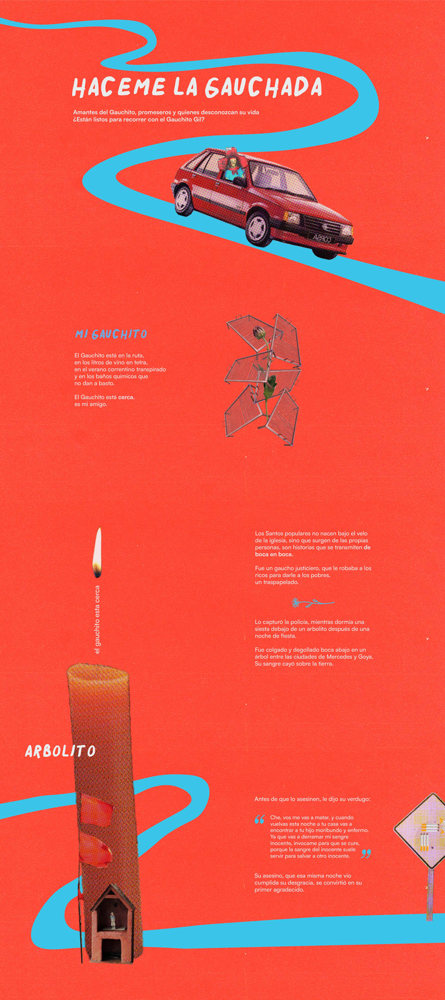
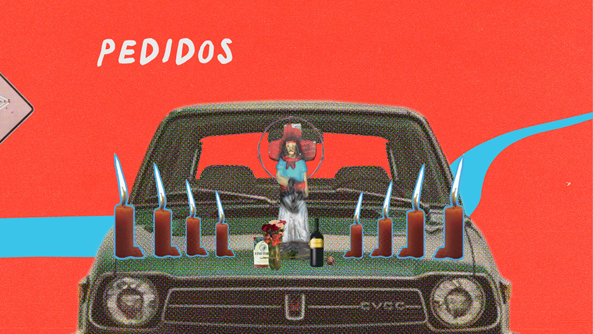
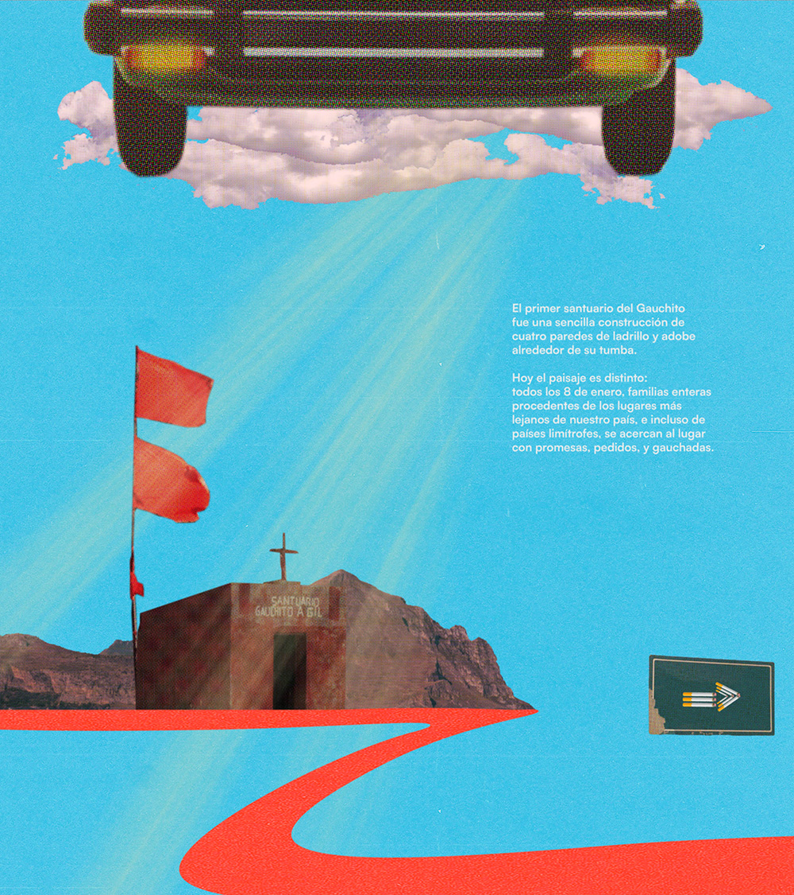
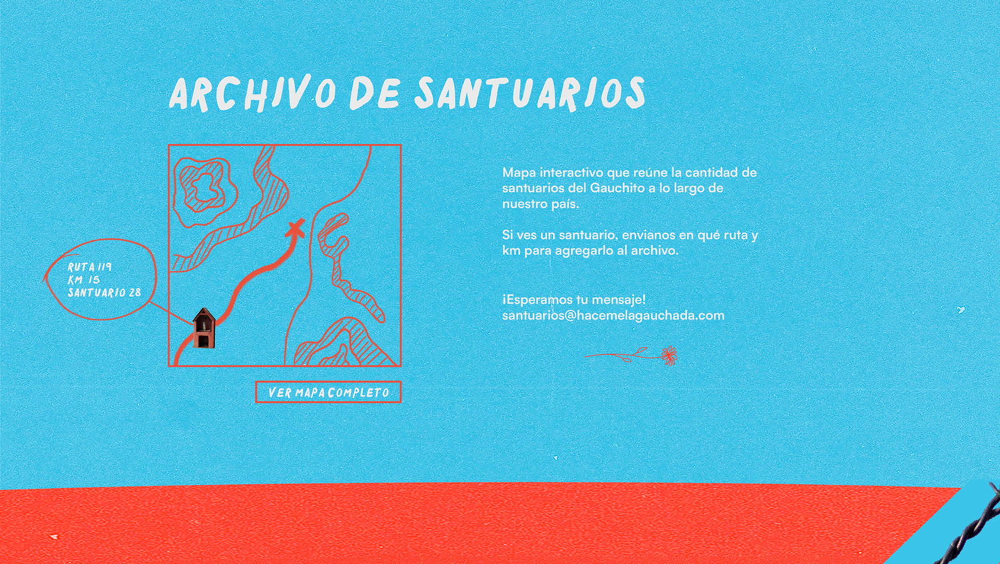
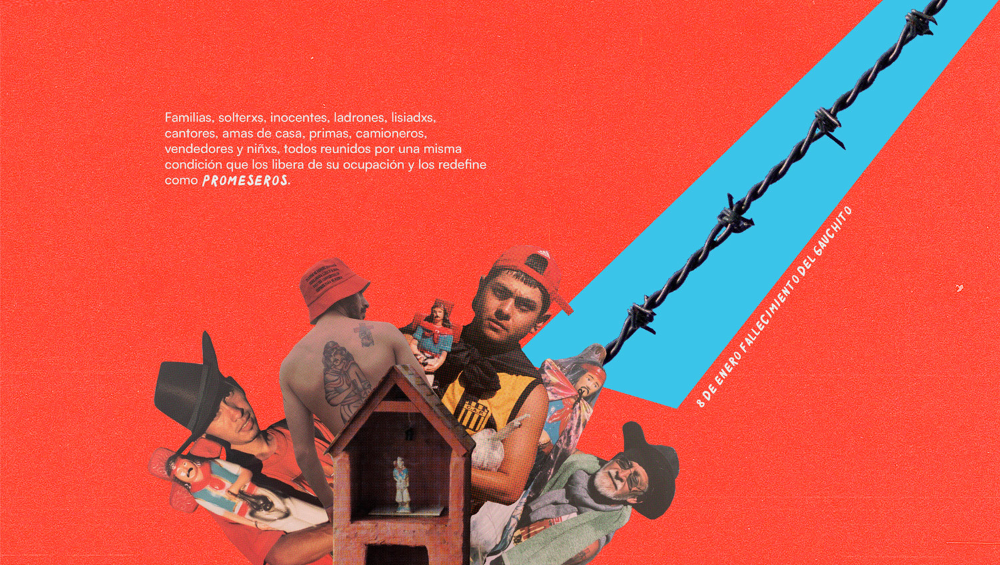
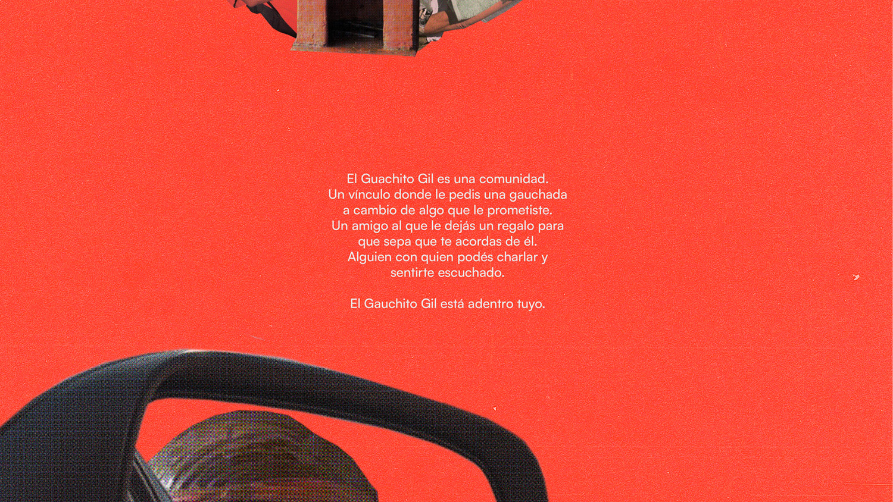
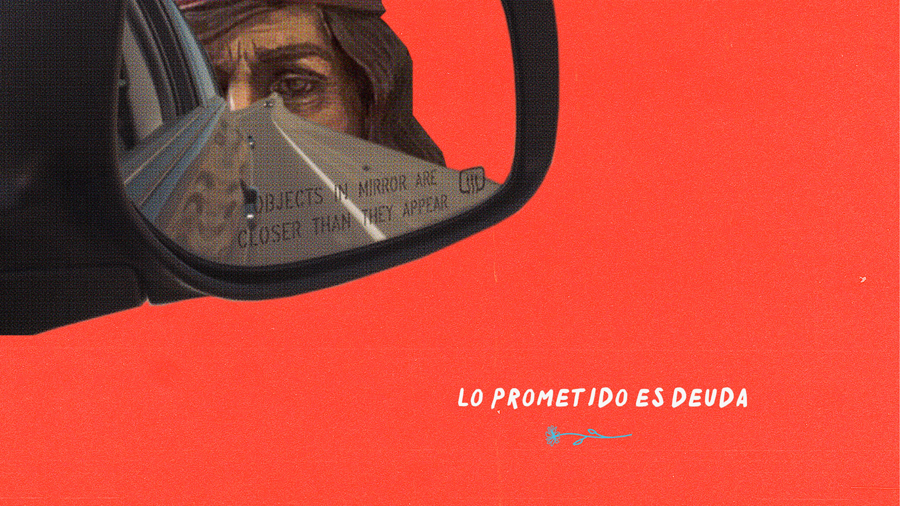

El scroll del “Gauchito Gil” busca reconsiderar y entender la creencia desde una perspectiva actual; comprendiendo que es un fenómeno que atraviesa a los creyentes y no creyentes. Link de figma